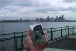

Willkommen bei myPod
Willkommen an dem Ort, an dem Sie sich mit Ihrem iPod darstellen können,
wo auch immer Sie sind. Wollen Sie mitmischen? Alles, was Sie dafür brauchen,
ist irgendein iPod - vom frühen Classic bis zum neuesten iPod Nano,
vom kleinsten iPod Shuffle zum größten, dem iPod Photo - und eine
Digitalkamera. Machen Sie einfach einen Schnappschuss von Ihrem iPod an
Ihrem Lieblingsort und wir werden ihn mit Freuden hier posten.
Worauf warten Sie noch?
Seattle, Washington
Mein iPod in Seattle! Sie können Regenwolken und das Wahrzeichen von Seattle, die Space Needle, sehen. Von den
628 Cafés sehen Sie nichts.



Birmingham, England
Hier ein paar iPod-Fotos aus der Gegend von Birmingham. Es gibt da drüben offensichtlich einige
Leute, die ihren iPod leidenschaftlich lieben. Sehen Sie sich nur die klassische englische
Telefonzelle an!